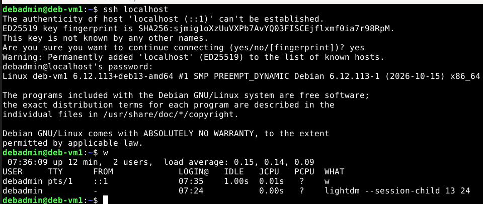
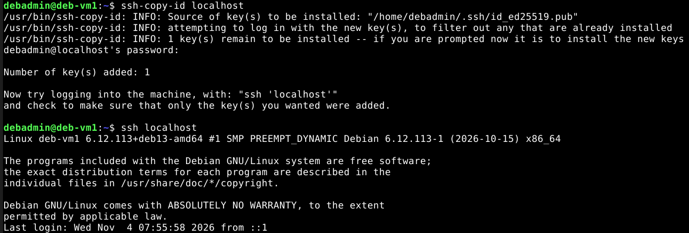
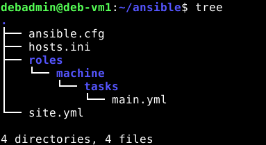
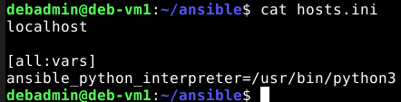
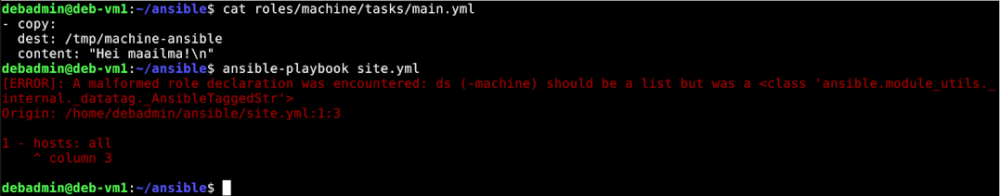
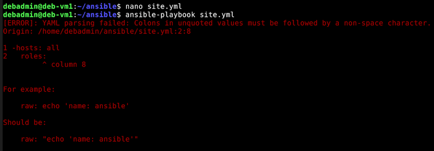
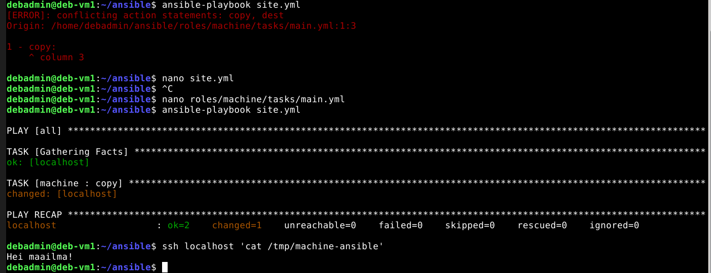

- Onko kuitenkin täysin ns. "riskitöntä" ?
- "ssh-keygen" -komento luo avainparin. Jos käyttäjä on luonut jo aikaisemmin avainparin, ohjelma kysyy vanhan avainparin korvaamista uudella.
Aloitin hakemalla & asentamalla päivitykset olemassaoleviin paketteihin ("sudo apt-get update && sudo apt-get upgrade -y"). Seuraavaksi SSH:n asennus ("sudo apt-get install ssh"), ja SSH:n daemonprosessin automatisoitu käynnistys "sudo systemctl enable --now ssh".
Yhteyden testauttaminen toimi muodostamalla yhteys omaan koneeseen. Eli ensin "ssh localhost" ja salasanan syöttäminen. Onnistuneen yhdistämisen jälkeen suljetaan yhteys "exit". Jotta käyttäjän todentaminen olisi voitu toteuttaa SSH:n julkisella avaimella, pitää ensin kopioida se yhdistettävän laitteen muistiin. Tämä onnistuu ensiyhdistämisen jälkeen "ssh-copy-id + IP-osoite" - komennolla.


Eli asensin päivitykset sekä Ansible-työkalun jo jokseenkin tutulla komennolla "sudo apt-get update && sudo apt-get install ansible". Loin uuden hakemiston sekä vaihdoin itseni sinne ("mkdir ~/ansible/ && cd ~/ansible/ ").
Sitten ("touch ansible.cfg| touch hosts.ini| touch site.yml| mkdir -p ~/ansible/roles/machine/tasks/ && touch roles/machine/tasks/main.yml"). Tällä yhdistelmäkomennolla loin tarvittavat konfigurointi-, hostlista- ja roolinmääräys-tiedostot sekä hakemiston tehtäville, jotka suoritetaan "machine"-roolin omaavalle koneelle.

Ensikertalaisena määritin ainoastaan localhost-laitteen "hosts" -tiedostoon, sillä tällä pystyttiin kokeilemaan Ansiblen toimivuutta SSH-yhteyden välityksellä omaan virtuaalikoneeseen. Lisäsin myös sen alle komennon, joka määritti Ansiblen käyttämään tiettyä Python3-versiota.

Lisäsin myös konfigurointitiedostoon "inventory = hosts.ini" - kohdan, jotta työkalu osaisi suoraan hakea käytössä olevat koneet tiedostosta.
Jotta jokaisen host-laitteen roolit voitaisiin erotella sekä myöntää eri tason laitteille eri oikeuksia, tulisi rooleja luoda monia ryhmien mukaan. Tässä tehtävässä kokeiltiin Ansiblea, joten käytin vain luomaani "machine" - roolia, määrittäen sen jokaiselle laitteelle hosts.ini - listassa.
Lopuksi ~/ansible/roles/machine/tasks/main.yml - tiedostoon iskettiin tehtävä, jonka Ansible oli tarkoitus suorittaa. Kyseinen tehtävä oli /tmp/machine-ansible - tiedoston luominen localhost - koneeseen, sisältönä "Hei maailma!" teksti. Muutaman virheilmoituksen ratkomisen jälkeen totesin oppineeni että Ansible on erittäin tarkka välilyönneistä sekä väliviivoista.


Lopuksi komennolla "ssh localhost 'cat /tmp/machine-ansible' " tulostettiin tiedoston viesti.

Karvinen, T. 2026: Hello Ansible | Luettavissa: Linkki | Luettu 1.11.2026
Karvinen, T. 2026: SSH public key - Login without password | Luettavissa: Linkki | Luettu 2.11.2026
Ansible Core Documentation. Interpreter Discovery | Luettavissa: Linkki | Luettu 1.11.2026